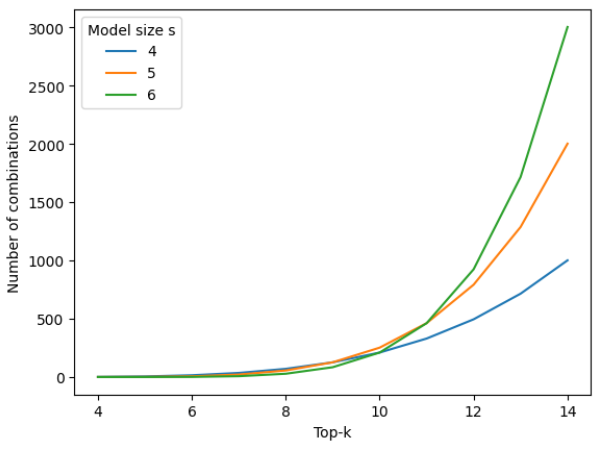

Scorepyo risk-score model
Contents
Scorepyo risk-score model#
Primer on risk-score model#
Let’s start with the introduction of risk-score model from Wikipedia:
Risk score (or risk scoring) is the name given to a general practice in applied statistics, bio-statistics, econometrics and other related disciplines, of creating an easily calculated number (the score) that reflects the level of risk in the presence of some risk factors (e.g. risk of mortality or disease in the presence of symptoms or genetic profile, risk financial loss considering credit and financial history, etc.).
A risk-score model is composed of :
a feature-point card, indicating points for each feature
a score card, associating a risk to a score
Here is CHADS2, an example of risk-score model for stroke risk of people with a specific condition (Image source):

What motivates the use of such model?
Motivation#
Risk-score models sacrifice the performance in terms of classification performance, in favor to all the following aspects:
understand and trust the model decision
investigate fairness issues
make sure to satisfy legal requirements
remember it
be able to use it with a paper and pen
The extreme interpretability comes from 3 properties : binary features, the additive aspect and sparse small integer coefficients.
The binary features aspect is independent from the model. However the additive aspect can be found in logistic regression, and the sparse coefficients property is tunable via a L1 regularization. A first simple approach could be to fit a logistic regression with L1 regularization, and round the coefficient in order to have small integers.
Logistic regression approach
For further explanation on the drawback of the rounding of logistic regression approach, the Neurips 2022 paper FasterRisk: Fast and Accurate Interpretable Risk Scores adresses this issue in its introduction.
Architecture#
The problem can be decomposed into finding the subset of binary features, defining points for each, and defining the probabilities of each possible score.
These 3 steps can be done at once or separately. The specificity of the Scorepyo package is that it does not rely on the logistic function to link scores and associated probability. It allows to have a wider model search-space, with more freedom on model probabilities.
Scorepyo first combines binary feature selection and points definition, then defines the probability for each possible score.
We can represent the different steps as follows :
Binary feature selection and points definition#
The binary features selection and points definition can be decomposed into 2 steps :
Ranking of binary features
Enumeration and maximization
Ranking of binary features#
Once the binary features are created, a binarizer such as EBMBinarizer stores information about the process, such as the associated log-odds, the density (number of samples positive on this binary feature) and the name of the feature it originates from. All these information can be used to rank the features.
Suppose you have the following set of binary features with associated log-odds and density:
binary_feature |
log_odds |
density |
|---|---|---|
worst concave points < 0.1 |
0.58 |
213 |
mean texture < 18.81 |
0.55 |
130 |
worst concavity >= 0.23 |
-0.53 |
210 |
area error < 23.93 |
0.45 |
200 |
worst area < 684.55 |
0.44 |
213 |
A possible ranking would be to multiply the associated log-odd of the binary feature by the number of samples positive for this binary feature. This would give the following table:
binary_feature |
log_odds |
density |
sum_log_odds |
|---|---|---|---|
worst concave points < 0.1 |
0.58 |
213 |
123.54 |
mean texture < 18.81 |
0.55 |
130 |
71.5 |
worst concavity >= 0.23 |
-0.53 |
210 |
111.3 |
area error < 23.93 |
0.45 |
200 |
90 |
worst area < 684.55 |
0.44 |
213 |
93.72 |
The ranking of binary features would then be :
binary_feature |
log_odds |
density |
sum_log_odds |
rank |
|---|---|---|---|---|
worst concave points < 0.1 |
0.58 |
213 |
123.54 |
1 |
worst concavity >= 0.23 |
-0.53 |
210 |
111.3 |
2 |
worst area < 684.55 |
0.44 |
213 |
93.72 |
3 |
area error < 23.93 |
0.45 |
200 |
90 |
4 |
mean texture < 18.81 |
0.55 |
130 |
71.5 |
5 |
See here for more information on available rankers.
Once the features are ranked, we keep the top-\(k\) features according to the ranking, with \(k\) being a hyperparameter of the risk-score model. This hyperparameter implies a tradeoff between computation time and size of the exploration.
Feel free to design any ranker you feel would be more appropriate, and compare it to the other existing ones. The package is designed to evolve by increasing the possibilities for each component, and adding new rankers is a part of this task.
Binary features combination and points enumeration#
Now that the features are ranked, the next step is to enumerate all possible combinations of binary features within the top \(k\) binary features. This means that the enumeration will yield \(\binom{k}{s}\) combinations. This explains why \(k\) controls the tradeoff between exploration and computation time. Here is a figure illustrating the increase of combinations tested when increasing \(k\), for the same model size \(s\).
For each combination of \(s\) binary features among the top \(k\), Scorepyo will enumerate all possible points combination. This corresponds to the cartesian product of a range of integers for each binary feature.
In order to lower as much as possible the number of possibilities, the range of integers for each binary feature will vary. Suppose the log-odd value associated to a binary feature is negative, then the range of possible integer values will only be from the minimum point value allowed by the model to -1. Conversely, in case the associated log-odd is positive, then the range will be from 1 to the maximum point value allowed by the model.
You will find below an example of point definitions for 3 features, a minimum point value of -2 and a maximum point value of 2.
binary_feature |
log_odds |
range_possible_points |
|---|---|---|
worst concave points < 0.1 |
0.58 |
[1,2] |
worst concavity >= 0.23 |
-0.53 |
[-2,-1] |
worst area < 684.55 |
0.44 |
[1,2] |
This will lead to all the following points combination for these 3 features:
worst concave points < 0.1 |
worst concavity >= 0.23 |
worst area < 684.55 |
|---|---|---|
1 |
-2 |
1 |
1 |
-2 |
2 |
1 |
-1 |
1 |
1 |
-1 |
2 |
2 |
-2 |
1 |
2 |
-2 |
2 |
2 |
-1 |
1 |
2 |
-1 |
2 |
We can observe how the number of combinations explodes and why constructing a risk-score model is a combinatorial problem. This outlines the importance of the quality of the ranker, in order to put at the top the best features to work with.
We can now compute the score (i.e. sum of points) on each sample for each point combination. The selection of features and points combination kept will be the combination with the best value on the defined metric. The chosen metric will be maximized.
The scores on each samples naturally rank the samples. As the scores are not probabilities yet, ranking metrics such as ROC-AUC or Average Precision are preferable at this stage. Like the ranking step, any custom metric based on a list of integer scores and a binary target can be used.
Fast numba ROC-AUC
There exists in Scorepyo a fast numba implementation of ROC-AUC taken from this repo.
Enumerating all combinations 1 by 1 takes a lot of time but fit in memory, and doing all combinations with numpy is more efficient but can take too much memory. Therefore, the Dask package has been chosen to select the best combination of features and points, as it can work out-of-memory if needed, and parallelize as much as possible the different computations.
Probability calibration#
At this stage, the selection of binary features and their associated point has been done so given a calibration set, each sample has a score. For each possible score \(i\), we have the information of positive label samples (\(n^+_i\)) and negative label samples (\(n^-_i\)). A perfectly calibrated model on the training set would output a probability of \(\frac{n^+_i}{n^+_i+n^-_i}\) for each score \(i\). This is also the solution that minimizes the log loss (see proof here).
However in risk-score model, you need to respect an ordering constraint of having an increasing probability with the score. In package like risk-slim or fasterrisk, this is done by using the logistic function on the score, with eventually an additional multiplier term for fasterrisk.
Scorepyo performs probability calibration by finding the probabilities for each score, respecting the ordering constraint, that optimize the logloss. This problem is convex, and is solved thanks to the CVXPY package.
Calibration set
You can give the calibration set via arguments in the fit method. If none are provided, calibration will be done on the training set.
What is described here is done by the VanillaCalibrator class. As with the ranker, or the enumeration maximization metric, you can create your custom calibrator class, given that it respects the convention defined in the package.
As examples of that, Scorepyo provides 2 additional calibrators that are useful when the logloss of the calibration set is deteriorated too much on a test set, mostly due to calibration set size. There exists BootstrappedCalibrator that bootstraps the calibration set in order to have multiple datasets coming from the same distribution. After bootstrapping a specific number of datasets, it will find probabilities that either :
optimize the average logloss on all bootstrapped datasets
optimize the worst logloss of all bootstrapped datasets
This approach helps by putting some uncertainty on the dataset used for calibration, and reduce overfitting, especially if you are using the training set because of a reduced dataset.